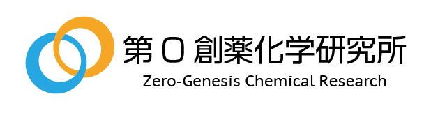
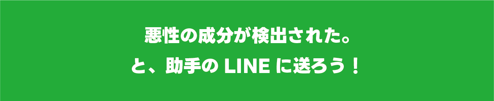
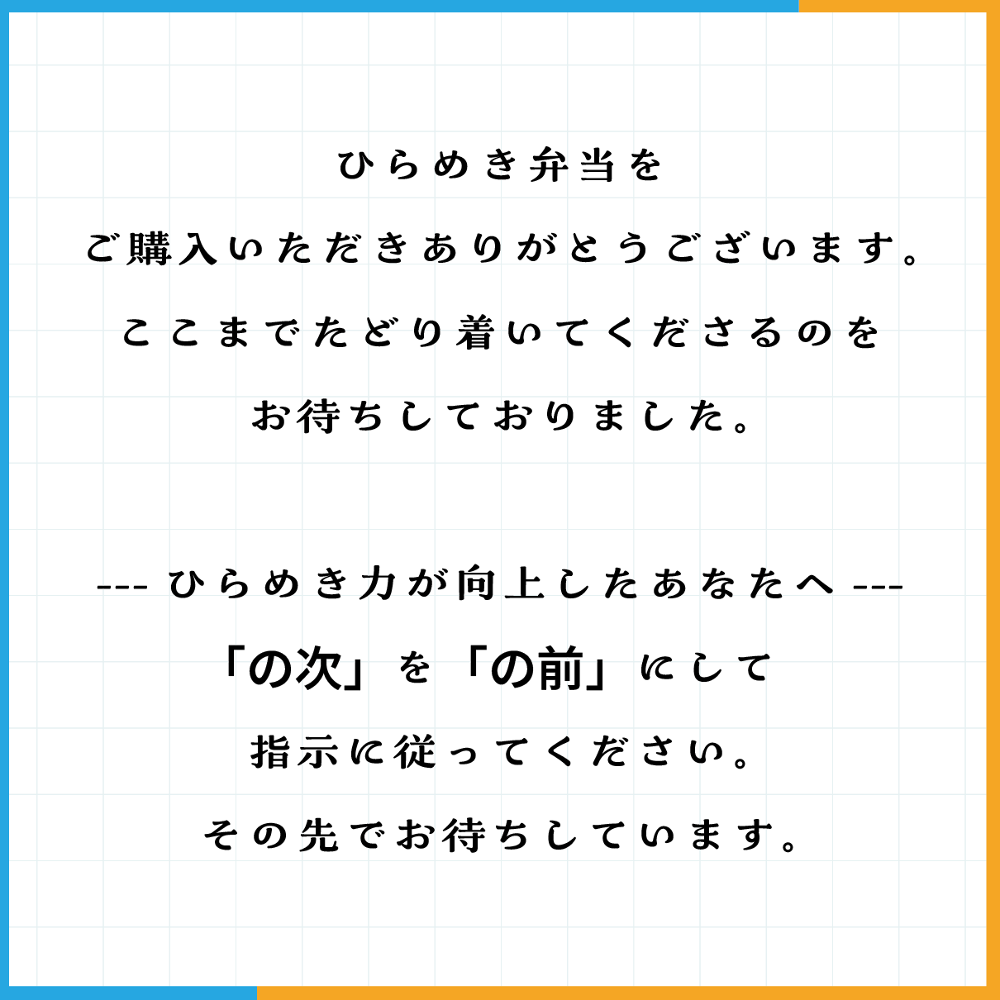
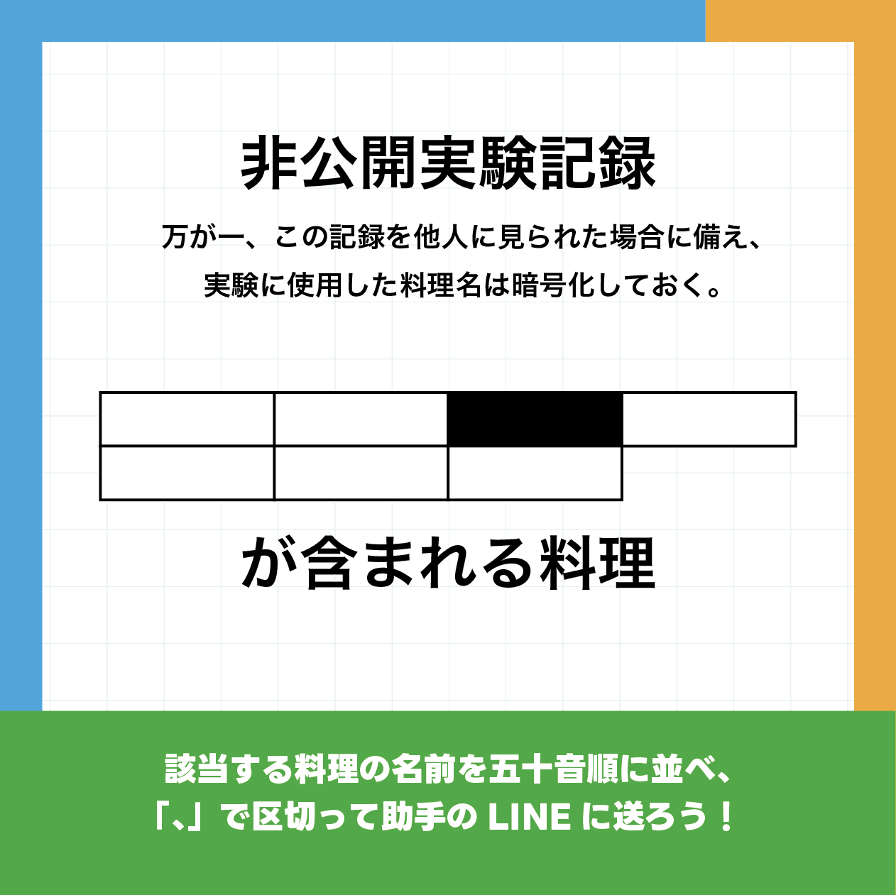

あなたの健康状態
解析完了総合所見
体内に悪性の成分が検出されました。
第０創薬化学研究所 ／ 手占い 解析レポート

第０創薬化学研究所手の画像を用いた健康状態の予測
最先端のAIがあなたの手を読み取り、健康状態を予測します。
片手を撮影して、解析結果を確認してください。
片手の手のひら・手の甲を正面から撮影してください。手の側面や斜めからの写真は認識できない場合があります。
※カメラには利用許可とHTTPS接続が必要です。外カメラを優先して起動します。
写真はお使いの端末内だけで解析されます。撮影画像がサーバーに送信・保存されたり、ほかの人に公開・共有されたりすることはありません。
解析結果
手の画像をもとにした解析が完了しました。
この写真は、端末内でのみ一時的に表示されています。
総合所見
体内に悪性の成分が検出されました。



追加資料を表示できませんでした。